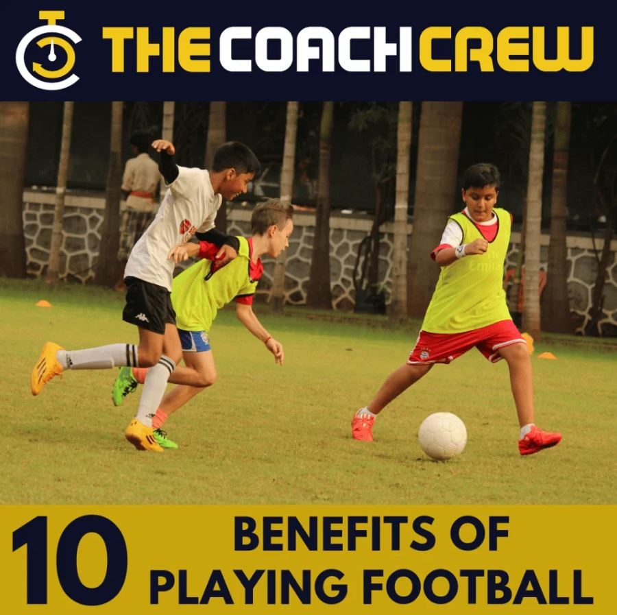

Introduction
Many children, teenagers, and adults now spend long hours sitting at school, work, or home. Excessive screen time and low physical activity can reduce daily movement and limit meaningful social interaction. Parents and adults often look for an activity that supports physical health, mental well-being, confidence, and social skills at the same time. Football offers more than competition. It gives people a practical way to stay active while learning and connecting with others.
As a team sport, football combines aerobic exercise, coordination, communication, discipline, and social interaction in one activity. Regular play can support cardiovascular fitness, child development, adolescent health, and adult exercise habits. Its benefits can also extend to mental health, teamwork, confidence, and lifelong fitness.
How Football Supports Physical Health at Every Age
Builds Cardiovascular Fitness
Football keeps the body moving through running, sprinting, jogging, and short periods of recovery. These repeated movements challenge the cardiovascular system and help improve heart and lung function. Regular play can also build aerobic capacity and endurance, making everyday physical activity easier over time. For children, teens, and adults, football provides an enjoyable form of aerobic exercise without relying on repetitive gym routines.
Strengthens Muscles, Bones and Coordination
Kicking, jumping, turning, stopping, and changing direction engage different muscle groups. These movements can support muscular strength, agility, balance, and motor coordination. Children can also develop fundamental movement skills as they learn to control their bodies and the ball. Football therefore supports several areas of physical fitness at once, rather than focusing only on strength or endurance.
Helps Maintain a Healthy Body
Regular football increases energy expenditure and can be part of an active lifestyle. However, healthy body management also depends on balanced nutrition, adequate sleep, and regular daily movement. Unlike activities that mainly train one physical dimension, football combines endurance, strength, agility, balance, and coordination in the same session.
Football Can Improve Mental and Emotional Well-Being
Reduces Everyday Stress
Can football improve mental health? Regular physical activity can support mental well-being and help with stress management. Football gives children, teens, and adults an active break from school, work, and prolonged screen exposure. Running and playing with others can also create a healthy change of focus, supporting better emotional well-being.
Builds Confidence Through Progress
Football gives players clear skills to practise, such as passing, dribbling, defending, and shooting. Seeing these skills improve over time can build self-confidence and self-efficacy. Small goals, such as completing more accurate passes or improving ball control, give players a sense of progress and achievement.
Encourages a Sense of Belonging
Being part of a football team creates opportunities for social connection. Players work toward shared goals and learn to communicate with teammates. This can be especially valuable for teenagers, who may benefit from positive peer relationships and a supportive group environment.
Football Develops Essential Social and Life Skills
Teamwork and Communication
Football requires players to communicate quickly and understand teammates’ movements. A player may need to call for a pass, signal space, or warn a teammate about an opponent. These communication skills also support cooperation outside sport. Players learn that good results often depend on listening, sharing information, and trusting others.
Discipline and Responsibility
Regular training teaches discipline and responsibility. Players learn to follow schedules, attend sessions, respect coaches, and follow game rules. Repeated practice helps build consistent habits instead of relying only on motivation. These habits can also support school, work, and other daily responsibilities.
Leadership and Respect
Football gives young players chances to develop leadership by encouraging teammates, making decisions, or taking responsibility during a match. It also teaches sportsmanship, fair play, respect for opponents, and accountability. Players meet different personalities and learn how to work with them. Because football creates real-time situations, communication and decision-making have immediate consequences, making these life skills practical rather than purely theoretical.
10 Benefits of Playing FootballThe benefits of football go beyond physical fitness. Regular play combines exercise with teamwork, skill development, social interaction, and practical decision-making. Here are ten key benefits.
- 1. Improves Cardiovascular Endurance: Running and continuous movement challenge the heart and lungs, helping support cardiovascular endurance.
- 2. Develops Agility and Coordination: Quick turns, stops, and direction changes improve movement control, balance, and coordination.
- 3. Supports Muscle Strength: Running, jumping, kicking, and stabilizing the body engage multiple muscle groups.
- 4. Encourages Healthy Activity Habits: Enjoyable football sessions can make regular physical activity easier to maintain.
- 5. Strengthens Teamwork: Players learn to cooperate and work toward a shared objective.
- 6. Improves Communication: Players practise verbal and non-verbal communication throughout each match.
- 7. Builds Confidence: Learning new skills and achieving goals can create a stronger sense of competence.
- 8. Supports Stress Management: Exercise and social interaction can support emotional well-being and everyday stress management.
- 9. Teaches Discipline: Training, preparation, and regular practice encourage consistency and responsibility.
- 10. Develops Decision-Making: Players quickly assess space, teammates, opponents, and timing before choosing their next move.
Why Football Is Especially Valuable for Children and Teens
Supports Healthy Childhood Development
Age-appropriate football can support childhood development by helping children practise fundamental movement skills. Running, balancing, jumping, kicking, and changing direction improve motor skills and body control. Players also learn spatial awareness as they judge where the ball, teammates, and opponents are on the field.
Gives Teenagers a Positive Social Environment
During adolescence, organized football provides structured interaction with peers and coaches. Regular training creates routine and gives teenagers constructive goals to work toward. It can also encourage healthy peer relationships through shared activities and teamwork.
Teaches How to Handle Winning and Losing
Football gives young people repeated opportunities to experience success, mistakes, setbacks, and improvement. These experiences can help develop resilience, emotional regulation, persistence, and sportsmanship. Learning to accept a loss, respond respectfully, and keep practising creates useful habits. In this way, youth sports provide a controlled environment where young people can practise cooperation, responsibility, and personal growth.
How Adults Can Use Football for Fitness and Social Connection
A Practical Form of Full-Body Activity
Recreational football combines running, acceleration, balance, and coordination, making it a useful form of adult fitness. The intensity can vary based on fitness level, match duration, and playing format. This allows adults to choose a pace that suits their current ability.
Combines Exercise With Social Interaction
Recreational football combines aerobic activity with social interaction. Adults can stay active while spending time with friends, meeting new people, and building stronger community connections through community sport.
Adaptability Matters
Formats such as small-sided games, walking football, recreational leagues, and beginner sessions can make football more accessible. People returning to exercise should choose an appropriate intensity and increase activity gradually.
How to Get the Benefits of Football Safely
Start at the Right Intensity: Beginners should increase activity gradually instead of immediately matching experienced players. This supports injury prevention and helps the body adapt.
Warm Up and Recover: Use a dynamic warm-up before playing. Stay hydrated and allow enough rest and recovery between sessions.
Use Suitable Equipment: Suitable football boots, comfortable clothing, and a safe playing surface can support sports safety. Children should also use age-appropriate equipment.
Prioritize Technique: Good movement technique helps players control their bodies during running, turning, and kicking. Qualified coaching can teach these skills and support safer participation.
Football offers value beyond winning matches. It combines physical fitness, mental well-being, social connection, discipline, and lifelong activity. With suitable formats and intensity, people of different ages and abilities can use football as a versatile form of exercise and recreation.